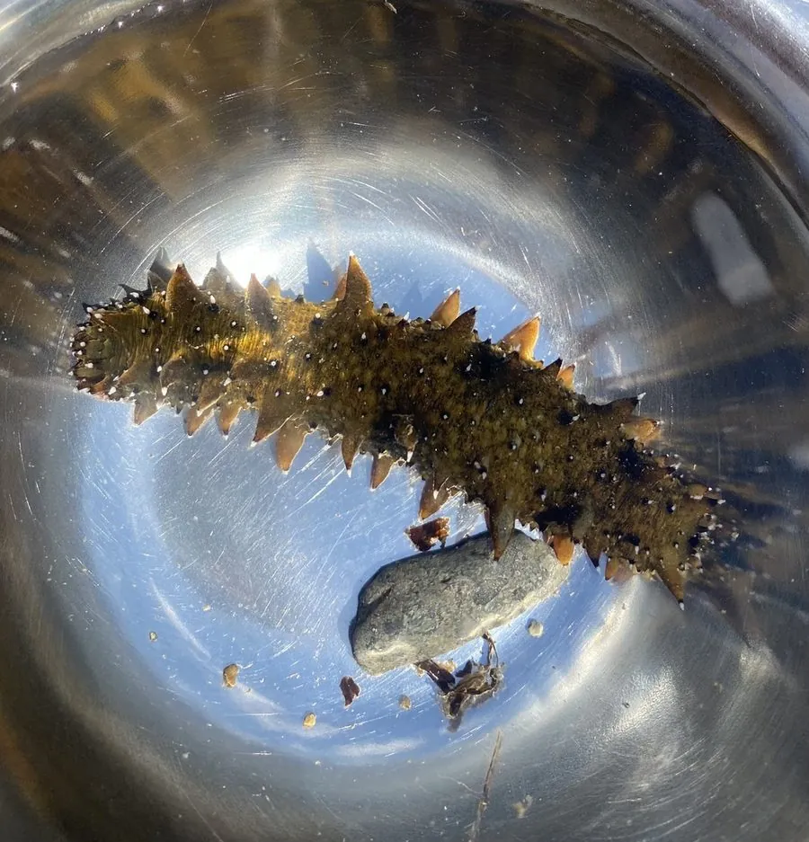

其他无脊椎动物 · 动物界
仿刺参 Apostichopus japonicus

中国北方沿海名贵的食用海参，体表长有圆锥状肉刺，受刺激时会吐出内脏自卫，再生能力强，夏季还会夏眠。
- 分类
- 门棘皮动物门纲海参纲目楯手目科刺参科属仿刺参属
- 栖息环境
- 岩礁、砾石底质与海藻丛，栖于潮下带浅海
- 地理分布
- 中国北方沿海、日本、朝鲜半岛和俄罗斯远东沿岸
- 保护级别
- IUCN 濒危（EN）；野生资源受过度捕捞威胁
物种志
仿刺参体呈圆筒状，长 20–40 cm，背面有 4–6 行圆锥形肉刺，腹面密布管足，用来吸附和爬行。体色随环境和光照从黄褐、绿褐到暗褐色，体表柔软有弹性，是海参中的优质种类。
它栖息在岩礁、砾石底质和海藻丛中，用触手扫食海底沉积物中的有机碎屑、藻类和微小生物。水温过高时，刺参会进入夏眠，躲进礁缝不吃不动。受刺激时它能从肛门喷出内脏即居维氏管，转移捕食者注意力，之后内脏可再生。夏季产卵，单只雌参可产卵数百万粒。仿刺参分布于中国北方、日本、朝鲜半岛和俄罗斯远东，是名贵的海产品，野生资源因过度捕捞受到威胁，现以海水养殖为主。
形态与习性
- 食性扫食海底沉积物中的有机碎屑、藻类和微生物
- 体长约 20–40 cm
- 夏眠水温超过 20 ℃ 时进入夏眠，停止摄食
- 繁殖夏季产卵，单只雌参可产卵数百万粒
- 防御受刺激时吐出内脏吸引捕食者，内脏可再生
- 经济名贵海产品，中国北方重要养殖对象
趣味知识
- 刺参在夏季水温高时会夏眠，躲进礁缝不吃不动。
- 受惊时它会从肛门喷出内脏转移敌人注意，之后内脏还能再生。
- 仿刺参是海参中品质最好、价格最高的种类之一。